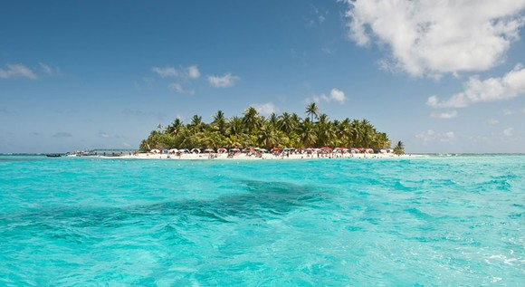
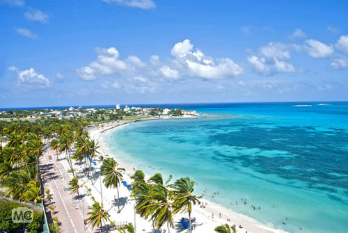
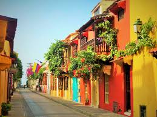

Actualmente Colombia ejerce dominio sobre la isla, formando parte del único departamento insular del país. Aunque Nicaragua, nación físicamente más cercana a esta isla, reclamaba también soberanía sobre la misma y las islas adyacentes, la Corte Internacional de Justicia dictaminó la soberanía total de Colombia sobre el archipiélago el 19 de noviembre de 2012.
Chichén Itzá es uno de los principales sitios arqueológicos de la península de Yucatán, en México, ubicado en el municipio de Tinum, en el estado de Yucatán. Vestigio importante y renombrado de la civilización maya, las edificaciones principales que ahí perduran corresponden al periodo denominado clásico tardío o postclásico temprano (800-1100 dC.).
Juan Esteban Aristizábal Vásquez, más conocido por su nombre artístico como Juanes (por Juan Esteban) (Carolina del Príncipe, Colombia; 9 de agosto de 1972), es un cantante y músico colombiano de pop latino y rock en español que fusiona diversos ritmos musicales y ha vendido más de 18 millones de álbumes;1 2 además de ser considerado como uno de los cantantes latinoamericanos más prolíficos de Colombia junto a Shakira.